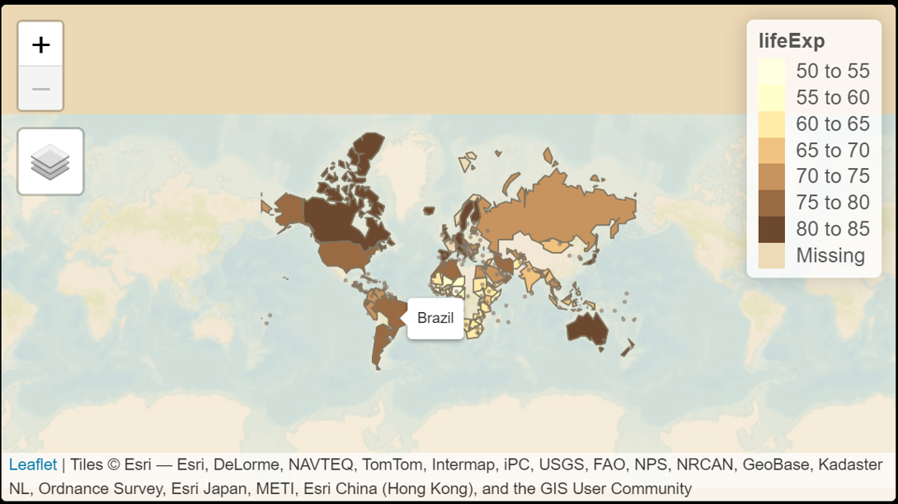
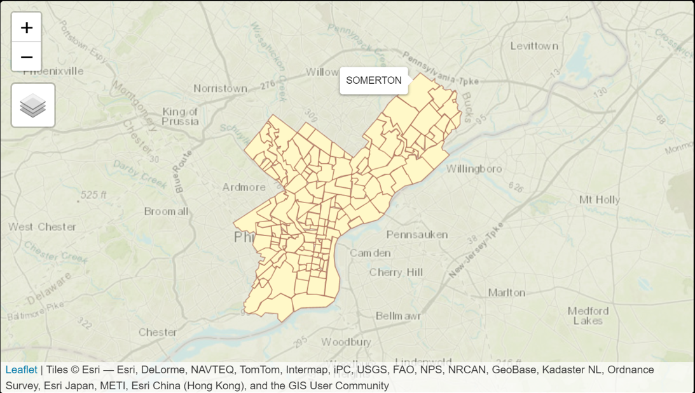

Topic 13 Creating Maps Using Shapefiles
In this note, we use examples to illustrate how to create shapefiles and export built-in shape files from R.
13.1 Existing Base Map File and New Information
We use the built-in world map file, World, from the package sf(simple features), a standardized way to encode spatial vector data. The World data set has 17 variables including country names and the corresponding abbreviations, population densities, geometry (information of geo-polygon with longitude and latitude), etc. The data set has 177 countries. We will use the country names to define a primary key to merge the new data (with updated information) with the existing data.
The new information to be included in the new data set is based on several data sets available at https://projectdat.s3.amazonaws.com/datasets.html#week12
The information we will add to the World data set is:
Income from years 2000, 2005, 2010, 2015 and name them as inc00, inc05, inc10, inc15.
Life expectancy from years 2000, 2005, 2010, 2015 and name them as life00, life05, life10, life15.
Primary defined from the country names and their abbreviations.
## Reading layer `world' from data source `C:\Users\75CPENG\AppData\Local\R\win-library\4.2\spData\shapes\world.gpkg' using driver `GPKG'
## Simple feature collection with 177 features and 10 fields
## Geometry type: MULTIPOLYGON
## Dimension: XY
## Bounding box: xmin: -180 ymin: -89.9 xmax: 180 ymax: 83.64513
## Geodetic CRS: WGS 84inc <- read.csv("https://pengdsci.github.io/datasets/income_per_person.csv")
income <- data.frame(country = gsub(" ", "", inc$geo), inc00 = inc$X2000, inc05 = inc$X2005, inc10 = inc$X2010, inc15 = inc$X2015)
###
lifexp <- read.csv("https://pengdsci.github.io/datasets/life_expectancy_years.csv")
life.exp <- data.frame(country = gsub(" ", "", lifexp$geo), lif00 = lifexp$X2000, lif05 = lifexp$X2005, lif10 = lifexp$X2010, lif15 = lifexp$X2015)
###
pop <- read.csv("https://pengdsci.github.io/datasets/population_total.csv")
popsize <- data.frame(country = gsub(" ", "", pop$geo), pop00 =pop$X2000, pop05 = pop$X2005, pop10 = pop$X2010, pop15 = pop$X2015)
###
region <- read.csv("https://pengdsci.github.io/datasets/countries_total.csv")
regions <- data.frame(country = gsub(" ", "", region$name), iso_a3 = region$alpha.3)
###
IncLifeExp <- merge(income, life.exp, by = 'country')
IncLifeRegion <- merge(IncLifeExp, regions, by = 'country')
IncLifRegPop <- merge(IncLifeRegion, popsize, by = 'country')
IncLifRegPop$iso_a2 <- substr(IncLifRegPop$iso_a3, 1,2)
###
myWorld <- merge(World0, IncLifRegPop, by = 'iso_a2')13.2 Creating Shapefiles from Dataframes
The next data set contains the geocode of the world’s capital cities. This information will be used to create pop-ups to include specific information in the data. The geocode of the capital city can be found at https://www.kaggle.com/nikitagrec/world-capitals-gps. I also placed a copy of the data set at https://raw.githubusercontent.com/pengdsci/sta553/main/map/WorldCapitalGeocode.csv
geocode <-read.csv("https://raw.githubusercontent.com/pengdsci/sta553/main/map/WorldCapitalGeocode.csv")
#geometry = paste('POINT (',CapitalLongitude ,',',CapitalLatitude,')')
#geocode$geometry = geometry
geocode$country <- gsub(" ", "", geocode$CountryName)
capital <- st_as_sf(geocode, coords = c("CapitalLongitude", "CapitalLatitude"), crs = 4326)
###
IncLifeRegionCap <- merge(capital, IncLifeRegion, by = 'country')
IncLifeRegCapPop <- merge(IncLifeRegionCap, popsize, by = 'country')13.3 Thematics Map with Created and Built-in Shapefiles
In this section, we use thematic maps to illustrate how to use modified shapefile (with additional information) and shapefiles created from data frames.
13.3.1 Example 1: Gapminder Data
{ fig.align='center', fig.height=6, fig.width=8} library(tmap) ## tmap_mode("view") # "view" gives interactive map; #tmap_style("classic") ## tmap_style set to "classic" ## other available styles are: "white", "gray", "natural", ## "cobalt", "col_blind", "albatross", "beaver", "bw", "watercolor" tmap_options(bg.color = "skyblue", legend.text.color = "white") ## tm_shape(myWorld) + tm_polygons("lifeExp", legend.title = "Life Expectancy") + tm_layout(bg.color = "gray", inner.margins = c(0, .02, .02, .02)) + tm_shape(IncLifeRegCapPop) + tm_symbols(col = "purple", size = "pop15", scale = .5, alpha = 0.5, popup.vars=c("CapitalName", "pop15", "inc00", "inc05", "inc10","inc15", "lif00","lif05","lif10", "lif15"))

13.3.2 Example 2: Philadelphia Neighborhood Shapefiles in Json
We can use the shapefile of any place to draw the base map of the place. For example, we can find the shapefile of the Philadelphia neighborhood at https://www.opendataphilly.org/dataset/covid-vaccinations/resource/473c9589-111b-43c9-a4a2-2dbe91f6dd7b?inner_span=True and draw the map of the Philadelphia neighborhood using the following map.
library(sf)
gshp = "https://github.com/azavea/geo-data/raw/master/Neighborhoods_Philadelphia/Neighborhoods_Philadelphia.geojson"
philly <- st_read(gshp)## Reading layer `Neighborhoods_Philadelphia' from data source
## `https://github.com/azavea/geo-data/raw/master/Neighborhoods_Philadelphia/Neighborhoods_Philadelphia.geojson'
## using driver `GeoJSON'
## Simple feature collection with 158 features and 8 fields
## Geometry type: MULTIPOLYGON
## Dimension: XY
## Bounding box: xmin: -75.28027 ymin: 39.867 xmax: -74.95576 ymax: 40.13799
## Geodetic CRS: WGS 84Since rgeos/rgdal/maptools are retired (because the maintainer is retired). Many packages that depend on some of the functions in these will have some issues at the moment. Json shape file is suggested for the moment. .shp seems to have issues to be loaded to R.
{ fig.align='center', fig.height=6, fig.width=8} library(tmap) tm_shape(philly) + tmap_options(check.and.fix = TRUE) + tm_polygons(border.col = "red", border.alpha = 0.5) + tm_layout(bg.color = "skyblue", aes.color = c(fill = "skyblue", borders = "grey40", dots = "black", lines = "red", text = "black", na = "grey70"), inner.margins = c(0, .02, .02, .02))

if (!require("Stat2Data")) {
install.packages("Stat2Data")
library(Stat2Data)
}
# knitr::opts_knit$set(root.dir = "C:/Users/75CPENG/OneDrive - West Chester University of PA/Documents")
# knitr::opts_knit$set(root.dir = "C:\\STA490\\w05")
knitr::opts_chunk$set(echo = TRUE,
warning = FALSE,
result = TRUE,
message = FALSE)